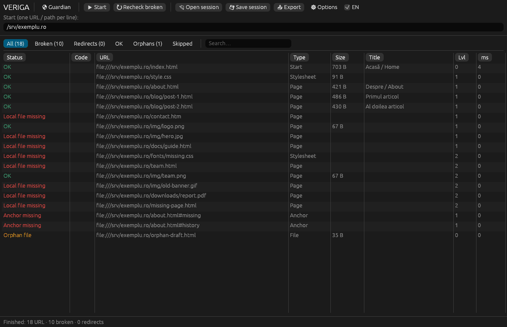

A website is a chain. When a link gives way, readers fall into nothing. VERIGA finds every broken link, proposes the fix, checks it live, and applies it only with a backup and a way back.
8CI targets: Linux, Windows, macOS, x86-64 and ARM64
0accounts, tracking cookies or external services
48automated Rust tests, plus accessibility and security audits
01 · Demo
Fix a site, one link at a time
The result of a check on a sample site. Pick a row, read the proposal and apply it. The source file on the right changes, and every change can be undone.
exemplu.ro · 10 links
Proposal
pagina-principala.html
Sample data, simulated in the page. The real application checks addresses over the network, respects robots.txt and writes to your files.
02 · The app
A native app on your desktop
The native graphical interface for Windows, macOS and Linux: sortable table, detail panel, filters and Guardian. No browser, no account, no tracking.
VERIGA

03 · Tutorials
Video tutorials, subtitled in 8 languages
Ten short tutorials recorded on the real application: from your first scan to Guardian, the command line, the HTML edition and the portable edition. Subtitles follow the page language; you can switch tracks in the player.
No audio: the explanations are in the subtitles. The .mp4 files carry all 8 subtitle tracks, and the .vtt files sit alongside.
04 · Features
Everything a serious checker does, and more
A clean-room replica of the Xenu Link Sleuth feature set, extended with the Trade-Free Link Guardian plugin: repair, journal, undo and scheduled runs.
CRAWL
Pages, images, CSS, scripts, frames, media, email, FTP and anchors
Online site or local folder, with orphan files and case mismatches
robots.txt per RFC 9309 (one deviation: a 5xx robots.txt does not stop the check) and sitemap seeding
A 403 is not broken: it is flagged for review
REPAIR
Local rules: scheme typos, mangled URLs, tracking params, http to https
Permanent redirects verified as the same resource, soft-404s rejected
HTML, Markdown, WordPress export (WXR) and sitemap sources
Backup, atomic writes, a journal and undo by position, context or unique text
Unlink, or look up the Wayback Machine, on request
INSIGHT
HTML, CSV, TSV, JSON, text and sitemap reports
Domains, health map, tree, trends and compliance
404 log with suggestions and .htaccess rules
Drift between runs: new and resolved links and changed H1 titles
Scheduled runs with webhook or email notification
Linux x86-64Linux ARM64Linux musl (static)Windows x86-64Windows ARM64macOS IntelmacOS Apple SiliconDocker scratchHTML single-file
05 · Security
A tool that reads the internet must not trust it
The code went through an adversarial audit: we attacked our own program, wrote the failing tests, then fixed them. Here is what no longer works against it.
RFC 9309robots.txt, a 5xx no longer hides a dead site
CSPhash-based, in the page and in exported reports
Known limits, listed in the README: DNS rebinding is not fully closed, escaped HTML in WordPress exports is not scanned, and the web edition is bound by CORS.
A public site points you at your internal network
Defence:private and local addresses are blocked by default, even after a redirect (anti-SSRF). Allow them explicitly with --allow-private.
Your password leaks to another server via a redirect
Defence:Authorization, Cookie and API keys go only to the internal origin, never to other hosts.
A hostile server slips code into your files
Defence:a new URL containing quotes, angle brackets, spaces, backticks or backslashes is refused before writing, in Rust and in the web edition.
The file changes while you repair it
Defence:content is re-read right before writing; a stale proposal is dropped, never applied at a wrong position. Writes are atomic and keep permissions and symlinks.
A page title turns into an Excel formula
Defence:CSV exports neutralise cells that start with =, +, - or @.
An imported session contains hostile HTML
Defence:everything from an imported session or journal is escaped, and the hash-based CSP blocks any unexpected script.
06 · Download
Direct downloads, version 1.1.0
Ready-to-run binaries, no installer and no account. Pick your system; every file downloads straight from GitHub Releases.
The graphical interface was exercised interactively on Linux only; the Windows and macOS builds are produced and tested by CI but have not been tried by hand.
07 · Install
Running in two minutes
Download the binaries above or build from source. The HTML edition needs nothing: open the file in a browser.